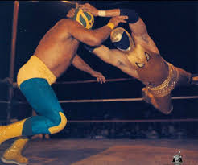

Nombre real: Manuel Leal
Fecha de nacimiento: 8 de junio de 1939
Lugar de nacimiento: Ciudad de México, México
Alias: Tinieblas, El Gigante Sabio
Conocido por su imponente presencia, máscara dorada y carisma. Se convirtió en un personaje icónico dentro y fuera del ring, destacando tanto en lucha libre como en cine y televisión.
Luchó en México, Estados Unidos, Japón y América Latina. Fue parte de películas y cómics que ayudaron a difundir la lucha libre en la cultura popular.
Figura respetada y admirada por generaciones. Padre de Tinieblas Jr. y compañero inseparable de Alushe. Aún participa en eventos como leyenda viviente.